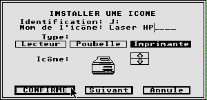
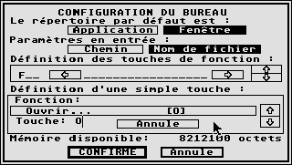
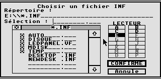
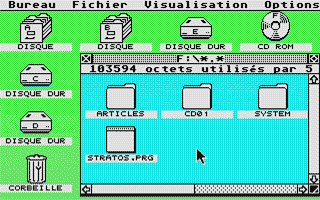

Capture d'images
( Les captures d'�cran ont �t� faites avec PACIFIST version 0.46 )
Définition du style de bureau ou des fenetres. 
Jeux d'icones. 
Les Raccourcis clavier. 
Chargement ou sauvegarde de differents bureau. 
Exemple de bureaux.